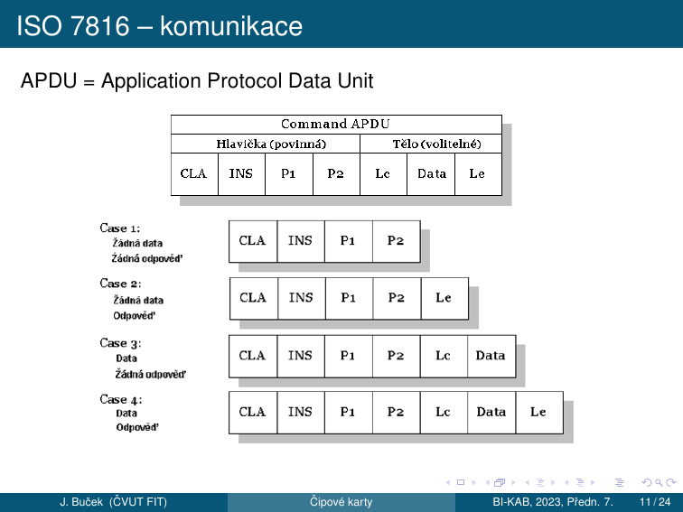
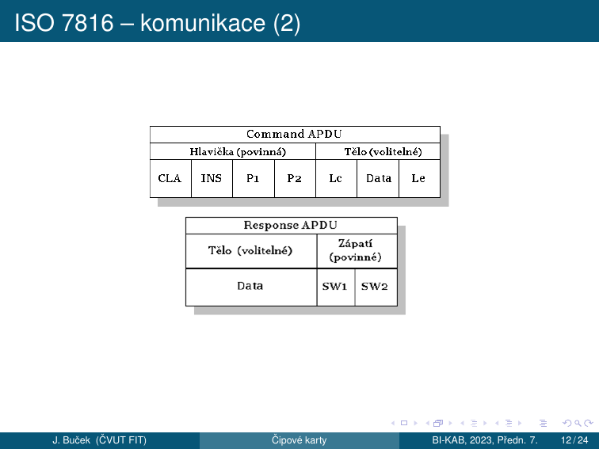
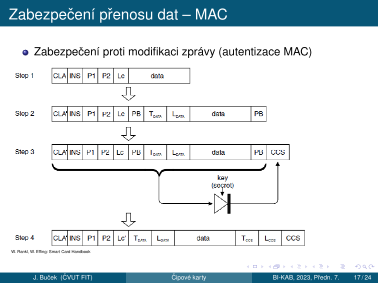
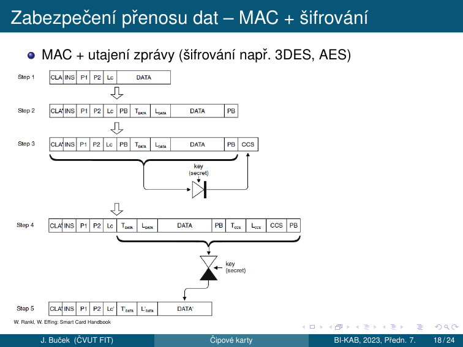
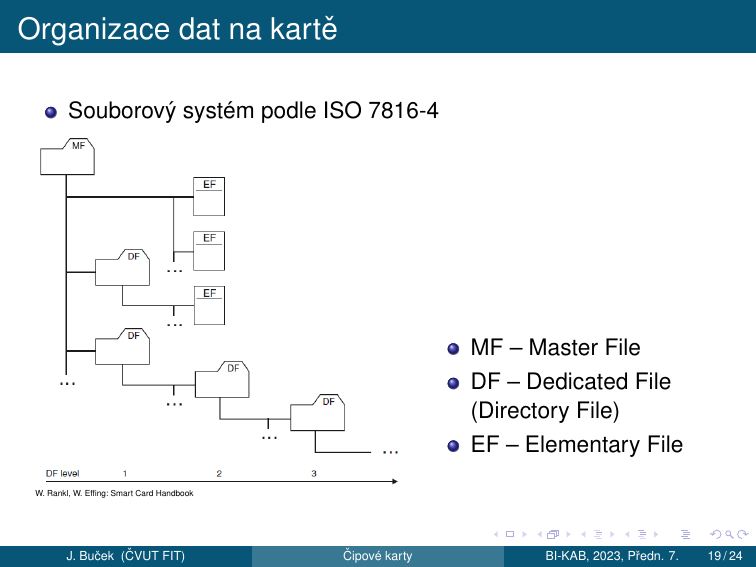
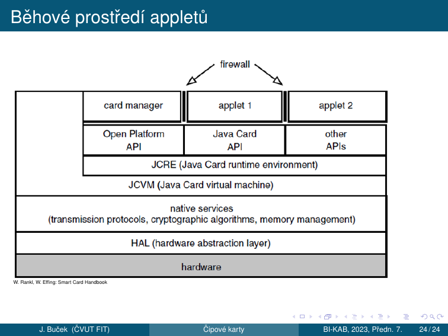

11. Čipové karty¶
Cíle kapitoly
- Znát důvody nasazení čipových karet a princip vícefaktorové autentizace
- Orientovat se v rozhraních (kontaktní vs. bezkontaktní, ISO 14443)
- Popsat vnitřní architekturu čipové karty a klient/server systém
- Znát formát APDU příkazu a odpovědi a 4 případy command APDU
- Orientovat se v souborovém systému ISO 7816-4
- Pochopit princip diverzifikace klíčů a Secure Messaging
- Znát specifika Java karet
11.1 Proč čipové karty¶
Čipová (smart) karta — obvykle plastová kartička obsahující integrovaný obvod. Nosič informace spojené s nějakým užitečným účelem — token.
Důvody nasazení:
- Bezpečná identifikace a autentizace
- Uchování a zpracování dat (kryptografické operace)
- Odolnost proti padělání (tamper resistance)
- Vícefaktorová autentizace — druhý faktor
Vícefaktorová autentizace (MFA)¶
| Faktor | Princip | Příklad |
|---|---|---|
| Co víme | Znalost (heslo, PIN) | Heslo, PIN |
| Co máme | Vlastnictví (ČK) | Čipová karta, token |
| Co jsme | Inherence, biometrie | Prst, duhovka, sítnice, obličej, hlas |
Příklady čipových karet¶
- Předplacená telefonní karta (minulé tisíciletí)
- SIM — Subscriber Identification Module (GSM); UICC — Universal Integrated Circuit Card (UMTS); R-UIM — Removable User Identity Module (CDMA)
- VISA/MC/EMV — bankovní platební karta
- Elektronická peněženka (drobné nákupy, platby za služby)
- Elektronická jízdenka, vstupenka
- Průkaz na slevu, věrnostní karta
- Průkaz pro vstup do budovy
- Karta pro digitální podpis, dešifrování (soukromý klíč, certifikát)
- NFC — Secure Element v mobilním telefonu nebo SW emulace
- „Čipování" — označení zvířete nebo člověka (?)
11.2 Rozhraní¶
Napájecí a komunikační rozhraní čipové karty může být zejména:
- Kontaktní (např. ISO 7816-2, USB...)
- Bezkontaktní (např. ISO 14443) ⇒ typ RFID (Rádiofrekvenční identifikace), základ NFC
Kombinace: hybridní (dva čipy), duální (jeden čip, dvě rozhraní)
Napájení a přenos dat:
| Princip | Použití |
|---|---|
| Elektrický | Pro kontaktní rozhraní |
| Elektromagnetický | Pro bezkontaktní rozhraní — rádiové signály, indukční vazba |
| Optický | Potisk, záznam — čárové kódy, MRZ (Machine Readable Zone) |
Bezkontaktní rozhraní — frekvence¶
Mnoho různých proprietárních i standardních druhů:
| Pásmo | Frekvence | Příklady |
|---|---|---|
| LF (nízkofrekvenční) | 125 kHz, 135 kHz | EM 4102, TI tagIT |
| HF s vazbou na blízko (proximity) | 13,56 MHz | ISO 14443 |
| HF s vazbou na dálku (vicinity) | 13,56 MHz | ISO 15693 |
| UHF | 868–928 MHz | ... |
Z hlediska procesorových karet s kryptografickými funkcemi nás zajímá zejména ISO 14443.
Příklady karet na ISO 14443:
- Studentský, zaměstnanecký průkaz ČVUT — MIFARE 1K (Classic) (proprietární protokol nad ISO 14443, ne podle ISO 7816-4)
- Opencard, In-karta ČD — MIFARE DESFire, DESFire EV1
- Biometrický pas — ICAO (International Civil Aviation Organization)
- Platební karty — Visa payWave, MC PayPass...
ISO 14443¶
- Frekvence 13,56 MHz, indukční vazba
- Dva typy modulace: Typ A (častější) a Typ B
11.3 Co je uvnitř čipové karty¶
Paměťové karty (ne „smart" v užším smyslu)¶
- Nic (skoro) — jen propojené kontakty, rezonanční obvod apod. (není smart ani čipová)
- Paměť:
- ROM s unikátním sériovým číslem
- EEPROM
- Zabezpečená paměť (např. Philips/NXP MIFARE Classic) — paměť s funkcí autentizace a šifrování, řízení přístupu k datům
- Ani ta ještě není smart v užším smyslu
Počítač (true smart card)¶
- Konfigurovatelný pomocí API — programovaný při výrobě
- Programovatelný v terénu — např. Java Cards (Standard GlobalPlatform — správa aplikací)
Vnitřní struktura čipové karty:
| Komponenta | Popis |
|---|---|
| CPU | Výpočetní jednotka |
| Kryptografický koprocesor | Akcelerace RSA, ECC, AES |
| RAM | Pracovní paměť (ztracena při vypnutí) |
| ROM | OS, trvalá paměť |
| EEPROM | Data, klíče (perzistentní, mazatelná) |
| Komunikační rozhraní | ISO 7816 kontakty nebo bezkontaktní |
| Obvody napájení, senzory | Ochrana, detekce útoků |
11.4 Systém s čipovými kartami — klient/server¶
flowchart TD
subgraph CARD["Čipová karta / token"]
DATA["Data + aplikace\n(klíče, certifikáty)"]
end
subgraph READER["Čtečka — terminál"]
CONN["Připojení k řídícímu počítači\n(sériová linka, USB CCID class...)"]
OS_API["API operačního systému\n(Windows PC/SC, Linux PCSC-Lite...)"]
end
subgraph MIDDLEWARE["Middleware — knihovna"]
API["Standardní crypto token API\n(PKCS#11, Windows Crypto API CSP)"]
end
APP["Uživatelská aplikace\n(mail klient, webový prohlížeč...)"]
SERVER["Server"]
CARD <--> READER
READER --> MIDDLEWARE
MIDDLEWARE --> APP
APP <--> SERVER11.5 Ovládání čipových karet — příkazy¶
| Oblast | Standardy |
|---|---|
| Obecné | ISO/IEC 7816-4, -7, -8, -9...; GlobalPlatform — správa aplikací |
| Platební systémy | EMV (Europay, MasterCard, Visa); EN 1546, CEPS — elektronické peněženky |
| Telekomunikace | GSM 11.11, 11.14 (SIM); TS 31.102, 31.111... (UICC, USIM) |
| Další | Standardizované nebo proprietární |
11.6 APDU — Application Protocol Data Unit¶
Command APDU (C-APDU)¶
APDU = Application Protocol Data Unit je základní komunikační jednotka mezi kartou a terminálem (ISO 7816).

| Pole | Povinnost | Velikost | Popis |
|---|---|---|---|
| CLA | povinné | 1 B | Třída instrukce (00 = ISO standard) |
| INS | povinné | 1 B | Kód instrukce |
| P1 | povinné | 1 B | Parametr 1 |
| P2 | povinné | 1 B | Parametr 2 |
| Lc | volitelné | 0/1/3 B | Délka datového pole |
| Data | volitelné | Lc B | Data příkazu |
| Le | volitelné | 0/1/3 B | Očekávaná délka odpovědi |
4 případy Command APDU:
| Případ | CLA INS P1 P2 | Lc | Data | Le | Popis |
|---|---|---|---|---|---|
| Case 1 | ✓ | — | — | — | Žádná data, žádná odpověď |
| Case 2 | ✓ | — | — | ✓ | Žádná data, odpověď |
| Case 3 | ✓ | ✓ | ✓ | — | Data, žádná odpověď |
| Case 4 | ✓ | ✓ | ✓ | ✓ | Data, odpověď |
Response APDU (R-APDU)¶

| Pole | Povinnost | Popis |
|---|---|---|
| Data | volitelné | Data odpovědi |
| SW1 | povinné | Status Word byte 1 |
| SW2 | povinné | Status Word byte 2 |
Status Words — nejdůležitější¶
| SW1 SW2 | Hex | Význam |
|---|---|---|
90 00 |
9000 | ✅ Úspěch |
61 xx |
— | Odpověď dostupná (xx bytů) |
67 00 |
6700 | Špatná délka |
69 82 |
6982 | Přístup zamítnut |
69 83 |
6983 | Autentizace blokována (PIN locked) |
6A 82 |
6A82 | Soubor nenalezen |
6A 86 |
6A86 | Nesprávné P1/P2 |
63 Cx |
— | Ověření selhalo, zbývá x pokusů |
Příklad — SELECT aplikace¶
→ 00 A4 04 00 06 41 42 43 44 45 46
│ │ │ │ │ └─────────────── AID data (6 B = číslo aplikace)
│ │ │ │ └────────────────── Lc = 06 (délka datového pole s AID)
│ │ │ └───────────────────── P2 = 00 (vrať nepovinnou FCI)
│ │ └──────────────────────── P1 = 04 (výběr podle jména/AID)
│ └─────────────────────────── INS = A4 (SELECT)
└────────────────────────────── CLA = 00 (standardní příkaz ISO 7816)
← 90 00 (OK)
11.7 Prvky zabezpečení¶
Fyzická bezpečnost¶
Nic — doufáme, že nikdo neposlouchá, nenahrává, neopakuje. Spoléháme se, že nevzniknou klony, emulátory.
Symetrická autentizace a šifrování¶
Klíč je tajný, sdílený mezi kartou a terminálem. Možno použít odvozování (diverzifikaci) klíčů.
- KDF (Key Derivation Function) — jednosměrná funkce (např. HMAC, MAC)
- Princip: \(k = \text{KDF}(\text{MasterKey}, \text{SerialNo})\)
- Různé karty budou mít různé klíče \(k\)
- Jednosměrnost KDF ⇒ prolomení \(k\) neprozradí MasterKey
- MasterKey stačí jen jeden (pro jednu sérii karet)
Asymetrická schémata¶
Veřejný a soukromý klíč, PKI, certifikáty, řetěz důvěry:
- Každá karta má soukromý klíč a odpovídající veřejný klíč
- Může mít VK certifikát → PKI
Diverzifikace klíčů¶
- Vstup: Hlavní klíč (Master Key) + diverzifikační data (číslo karty, identifikace systému, identifikace aplikace...)
- Výstup: Odvozený klíč (Diversified Key)
- Jednosměrnost: Z odvozeného klíče je výpočetně neschůdné zjistit hlavní klíč
11.8 Secure Messaging¶
Secure Messaging chrání APDU komunikaci. Různé úrovně zabezpečení:
| Úroveň | Popis |
|---|---|
| Bez autentizace, bez utajení | Plaintext komunikace |
| MAC | Zabezpečení proti modifikaci zprávy (autentizace MAC) |
| MAC + šifrování | MAC + utajení zprávy (šifrování např. 3DES, AES) |
Princip „zabalení" do struktur typu TLV — Tag, Length, Value.
Secure Messaging s MAC¶
Zabezpečení proti modifikaci zprávy:

Secure Messaging s MAC + šifrování¶
MAC + utajení zprávy:

TLV kódování¶
Každé pole APDU je zakódováno jako:
Příklad šifrovaného APDU:
11.9 Souborový systém ISO 7816-4¶
Data na kartě jsou organizována jako souborový systém podle ISO 7816-4:

- MF — Master File (kořen, FID = 3F 00)
- DF — Dedicated File (Directory File = adresář / aplikace)
- EF — Elementary File (soubor s daty)
Jména souborů¶
| Identifikátor | Velikost | Použití |
|---|---|---|
| FID (File Identifier) | 2 byty | Identifikuje MF, DF i EF; MF = 3F 00; výběr: SELECT (P1=0) |
| SFI (Short File Identifier) | 5 bitů | Identifikuje EF; přímý výběr v příkazech pro manipulaci s daty; čtení s implicitním výběrem — READ BINARY (P1=100sssss) |
| DF name / AID | až 16 bytů | Identifikuje DF (nebo aplikaci); může obsahovat AID → Java karty; výběr: SELECT (P1=4) |
Operace se soubory¶
| Operace | Příkaz | Hex |
|---|---|---|
| Výběr (MF, DF nebo EF) | SELECT | 00 A4 ... |
| Čtení transparentního souboru | READ BINARY | 00 B0 ... |
| Zápis transparentního souboru | UPDATE BINARY | 00 D6 ... |
| Čtení záznamu | READ RECORD | 00 B2 ... |
| Zápis záznamu | UPDATE RECORD | 00 DC ... |
Typy Elementary Files:
| Typ | Popis | Operace |
|---|---|---|
| Transparentní | Binární blob bez vnitřní struktury | READ BINARY, UPDATE BINARY |
| Záznamy pevné délky | Záznamy pevné délky | READ RECORD, APPEND RECORD |
| Záznamy variabilní délky | Záznamy proměnné délky | READ RECORD, APPEND RECORD |
| Cyklické | Cyklické soubory (pevná délka záznamu) | READ RECORD (poslední záznam) |
11.10 Java karty¶
Java karta obsahuje CPU + Java VM (virtuální stroj jazyka Java):
- Podmnožina jazyka Java
- Zjednodušený VM, předzpracování (konverze)
- Java interpreter (většinou částečná HW podpora)
- Java Card Framework, runtime
- Persistence dat — „heap je v EEPROM"
- Podpora transakčního zpracování
- Na Java kartách: Aplikace → Applet
Rysy jazyka Java Card¶
Podporované typy:
| Typ | Bitů | Podpora |
|---|---|---|
byte |
8 | ✅ |
short |
16 | ✅ |
int |
32 | ⚠️ nepovinně |
long, float, double |
— | ❌ |
Nepodporováno: znaky, řetězce, vícerozměrná pole, dynamické nahrávání tříd, GC a finalizace, serializace, klonování objektů.
Runtime knihovny: java.lang, javacard.framework, javacard.security, javacardx.crypto, (java.rmi...). V novějších verzích i float, řetězce, servlety.
Běhové prostředí appletů¶

Vrstvová architektura (od hardwaru nahoru):
- Hardware — fyzický čip
- HAL — Hardware Abstraction Layer
- Native services — transmission protocols, cryptographic algorithms, memory management
- JCVM — Java Card Virtual Machine
- JCRE — Java Card Runtime Environment
- API vrstvy — OpenPlatform API, Java Card API, Other APIs
- Aplikace — Card Manager, Applet 1, Applet 2, ..., firewall
Shrnutí kapitoly¶
Rychlý přehled
- MFA: Co víme (heslo/PIN), Co máme (čipová karta), Co jsme (biometrie)
- Rozhraní: Kontaktní (ISO 7816-2), Bezkontaktní (ISO 14443 @ 13,56 MHz)
- APDU: CLA INS P1 P2 [Lc Data Le] → [Data] SW1 SW2; 4 případy
- SW 9000 = OK; SW 6983 = PIN locked; SW 6A82 = file not found
- MF → DF → EF hierarchie souborů (ISO 7816-4)
- Diverzifikace klíčů: \(k = \text{KDF}(\text{MasterKey}, \text{SerialNo})\) — jednosměrná
- Secure Messaging: bez/MAC/MAC+šifrování; TLV kódování
- Java Card: CPU+JVM, Applet, EEPROM heap, JCRE/JCVM architektura
Klíčové otázky ke zkoušce
- Co je čipová karta a k čemu slouží? Uveďte typické aplikace.
- Jaké jsou tři základní faktory autentizace? Uveďte příklady každého faktoru.
- Jaké jsou typy čipových karet z hlediska rozhraní? Jaký je základní rozdíl mezi kontaktní a bezkontaktní kartou?
- Z jakých součástí se skládá čipová karta vnitřně?
- Jak je čipová karta kryptograficky zabezpečena? Jaký je princip odvozování klíče (key derivation)?
- Jaký je princip zabezpečení komunikace čipové karty — jak funguje autentizace zprávy a šifrování?